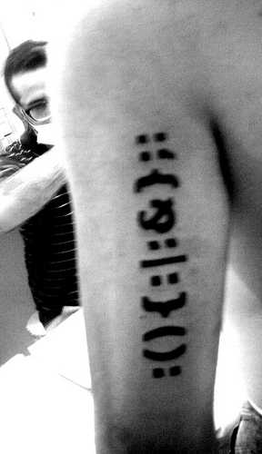
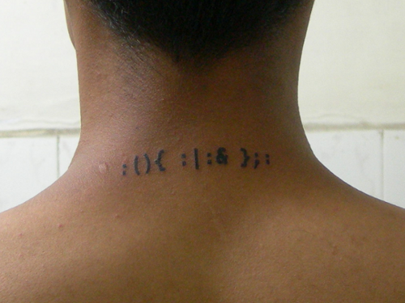
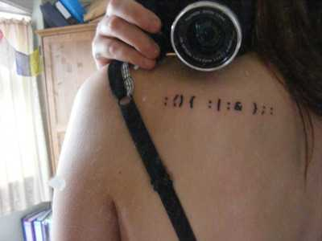

Jaromil's Musings

leave your comments
 printable page
printable page

The code :(){ :|:& };: provides arguably one of the most elegant examples of a fork bomb.
It was presented as a free and open source piece of net:art in 2002, along with a text titled la bohème digitale.
From the Wikipedia article Fork_bomb
In computing, the fork bomb, a form of denial-of-service attack against a computer system, implements the fork operation (or equivalent functionality) whereby a running process can create another running process. Fork bombs count as wabbits: they typically do not spread as worms or viruses. To incapacitate a system they rely on the assumption that the number of programs and processes which may execute simultaneously on a computer has a limit.
A fork bomb works by creating a large number of processes very quickly in order to saturate the available space in the list of processes kept by the computer's operating system. If the process table becomes saturated, no new programs may start until another process terminates. Even if that happens, it is not likely that a useful program may be started since the instances of the bomb program will each attempt to take any newly-available slot themselves.
Not only do fork bombs use space in the process table: each child process uses further processor-time and memory. As a result of this, the system and existing programs slow down and become much more unresponsive and difficult or even impossible to use.
As well as being specifically malicious, fork bombs can occur by accident in the normal development of software. The development of an application that listens on a network socket and acts as the server in a Client-server system may well use an infinite loop and fork operation in a manner similar to one of the programs presented below. A trivial bug in the source of this kind of application could cause a fork bomb during testing.
Within the first 5 years of circulation, this net:art piece has propagated on computer screens, t-shirts and most impressively for its own author: tattoos.
Also featured on the geekytattoos website, among the pioneers carrying a logic bomb everywhere are Silveira, C0le and V.
  
This forkbomb is a kind of poetic virus. If its visually attractive line of only thirteen characters is entered into the command line of a Unix system and the enter key is pressed, within seconds the computer will crash because the devious little program commands it to make multiple copies of itself, setting off a chain reaction and thus quickly exhausting the system’s resources. Jaromil: "In considering a source code as literature, I am depicting viruses as poésie maudite, giambi against those selling the Net as a safe area for a bourgeois society. The relations, forces and laws governing the digital domain differ from those in the natural. The digital domain produces a form of chaos—sometimes uncomfortable because unusual, although fertile—to surf thru: in that chaos viruses are spontaneous compositions, lyrical in causing imperfections in machines made to serve and in representing the rebellion of our digital serfs."
This energy is also embbedded into the twelve characters of jaromil's forkbomb:
:(){ :|:& };:
Most computer operating systems can be crashed or at least brought to a grinding halt when users, even those without superuser privileges, launch an abundant ever-growing amount of programs that eat up all memory and CPU time. The easiest way to achieve this is a "forkbomb", a little program which does nothing but launch two or more copies of itself upon startup. Since these copies do the same in turn, this sets off a chain reaction with an exponentially growing number of processes. Forkbombs have been popular entertainment among hackers since about the mid-1990s, but jaromil manages to condense them to a most terse, poetic syntax, arguably the most elegant forkbomb ever written.
In other words, if you have access to the terminal prompt of a Unix-like OS, these twelve characters - which look like Internet smilies - can bring it down. It has become a secret code of recognition among the initiated, like the stuffed trumpet of the Tristero underground postal network in Thomas Pynchon's novel "Crying of Lot 49".
This example also reveals a problematic issue of the term "software art": That it is often misunderstood as high programm craftsmanship. In fact, this understanding has its roots in computer science itself. Donald Knuth's textbooks "The Art of Computer Programming" or Paul Graham's recent book "Hackers and Painters" are founded on a post-classicist notion of art as beauty and high craftsmanship, for example in the elegance of an algorithm.
Jaromil’s Forkbomb is a form of public rebellion (he makes no secret of his identity or of his intentions), which serves as reminder of a free space in digital media that has become almost invisible to the general audience. It is in this sense also an invitation, like many other projects, especially some new media performances, to start fooling around oneself.
In the Digital Craft exhibit of Frankfurt's Museum fur Angewandte Kunst, you will find this brilliant piece of code poetry. The characters are silkscreened in black onto a meter square of translucent plastic, the whole resting on a simple white surface, in a display case behind glass.
Attributed to a writer identified only by the name "Jaromil", the exhibit text says that when it is run in a unix shell like zsh, this letterless code replicates itself like a virus until the memory of the system is full and causes a segmentation fault.
Pseudocode translation of :(){:|:&};:
:() = Define a function named : (A colon is a legal function name, it would seem.)
{:|:&}; = When this function is called, run a copy of itself
: = Execute the function named :, now.
I'm neither a h4x0r nor a virologist, but I wouldn't consider it a true virus since it can only replicate when run in a shell executed by its user. Plus its effects are negligible. But for it's typographic mystique, elegance, and efficiency, it is more than code. Like a little joke between the coder and the OS about how simple and mysterious self destruction can be.
WHAT DOES THAT T-SHIRT I GOT MEAN? Hopefully you picked up a T-shirt in the patio where we had about 400 of these cool T-shirts to give away in all sizes. The back of the shirt contained the oldest drawing known of the ARPANET, drawn 40 years ago on a napkin this september. It shows the first two nodes of this historical precursor to the internet. The graphic on the front side contains two elements: the first is the 'universally applicable fingerprint' of German minister of the interior Wolfgang Schauble, as published by the German hackers from Chaos Computer Club last year as part of the societal debate on including biometric data in identity documents. The second is the famous 'fork bomb' poem by Amsterdam based writer, programmer and activist Jaromil. In just thirteen attractive characters of shell code you will find enough recursive power to bring any UNIX-based system to a halt - and it looks pretty too. You work out what that means, if anything.
(2008) Another Language, page 98 - by Kornelia Freitag, Katharina Vester (genre: Literary Criticism)
(2007) The Exploit: A Theory of Networks, page 176 - by Alexander R. Galloway, Eugene Thacker (genre: Technology & Engineering)
(2005) Media Art net 2: Topical Highlights, page 307 - by Dieter Daniels, Rudolf Frieling (genre: Architecture)
(2004) P0es1s: Ästhetik digitaler Poesie the Aesthetics of digital Poetry, page 17 - by Friedrich W. Block, Christiane Heibach, Karin Wenz (genre: Art)

|


|


|
 copyleft 2000 - 2009 dyne.org
foundation and respective authors. Verbatim copying
and distribution is permitted in any medium, provided
this notice is preserved.
Send inquiries & questions to dyne.org's hackers. copyleft 2000 - 2009 dyne.org
foundation and respective authors. Verbatim copying
and distribution is permitted in any medium, provided
this notice is preserved.
Send inquiries & questions to dyne.org's hackers.
|

|